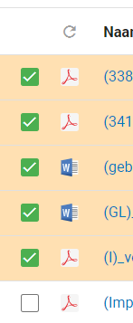
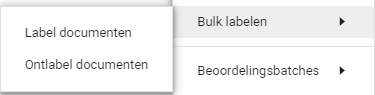

Als u in één keer aan meerdere, of een groep, documenten een label wilt toevoegen, kunt u dit doen door middel van de functie Bulk labelen. U kunt deze functionaliteit ook gebruiken om labels van meerdere documenten tegelijk te verwijderen.
Om snel meerdere documenten te voorzien van hetzelfde label selecteert u de gewenste documenten in de documentenlijst.

Vervolgens klikt u op het tandwiel.
Selecteer in het menu Bulk labelen.

Met Label documenten kunt u labels toewijzen en met Ontlabel documenten kunt u labels verwijderen. Klik op de gewenste optie.
Indien u de lijstoptie met gedeeltelijke familiestructuur aan heeft staan zal hier staan Label families en Ontlabel families, omdat u dan ook de families van de documenten gaat labelen. Tenzij u dit graag wilt, raden wij u aan om de lijstoptie altijd op Simpele lijst te houden. Hoe u dit kunt instellen vindt u in Uitleg 1 in het topic Personaliseren.
Selecteer het label dat u wilt toevoegen of verwijderen. Klik vervolgens recht onderin op Volgende en daarna midden in het scherm op Begin.
Bij het bulk labelen dient u rekening te houden met de relatie tussen verschillende labels. Bijvoorbeeld bij de Woo is het pas mogelijk om het label Zienswijze aan een document toe te voegen wanneer het document het label Valt onder verzoek is toegewezen aan een document. U kunt dus pas bulk labelen met het label Zienswijze als u ook aangeeft dat u het label Valt onder verzoek wilt toewijzen aan het document. U heeft nu de gewenste labels toegevoegd of verwijderd.